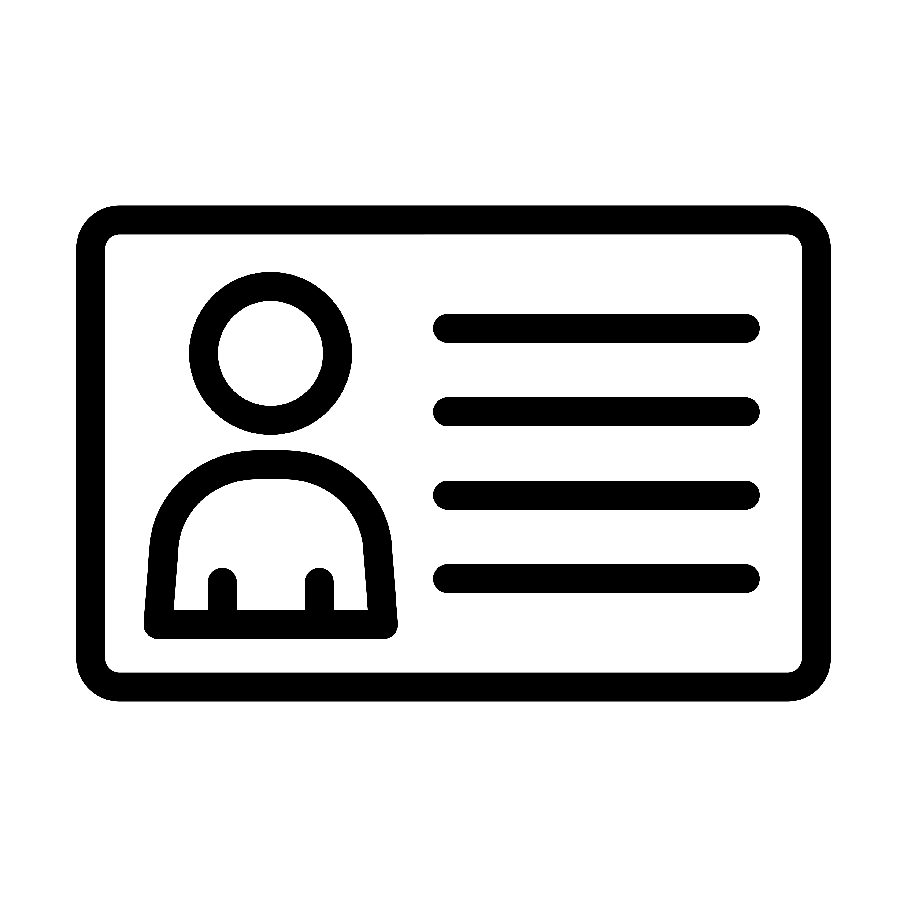
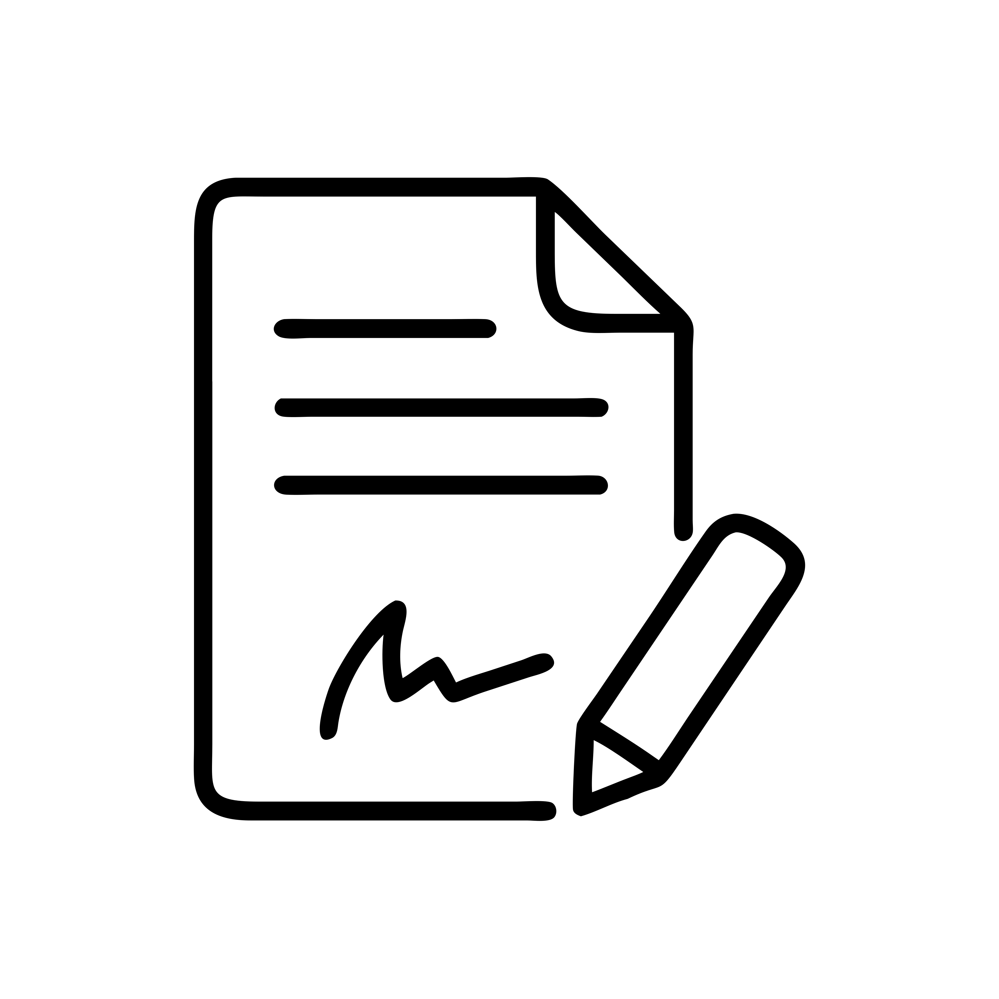

Patient Check-In
The first line of patient care is during the check-in process. The check-in process is also where the most patient privacy violations are likely to occur, given the public nature of the waiting room. The tabs below outline steps to follow as you check-in a patient in compliance with HIPAA privacy law. Please read each section carefully to understand your obligations to uphold patient privacy.
Step 1: Verify Patient Identity
-
Use first names only when calling patients from the waiting room.
-
Ask for two patient identifiers quietly after the patient approaches the front desk. The patient's full name and date of birth are sufficient proof of identity. A government-issued ID card also meets this requirement.

Step 2: Secure Patient Information
-
Speak quietly. You may need to discuss with the patient their reason for visit or insurance details. You must never announce this information, as this is considered Protected Health Information (PHI).
-
Turn computer screens away from public view. Although all screens are equipped with privacy filters, screens should still be kept out of view of the public.
-
Keep paperwork face-down and return completed forms to a secure location promptly after use.
-
Log out of the Electronic Health Records (EHR) system any time you leave your work station.

Step 3: Handle HIPAA Acknowledgment Forms
Notice of Privacy Practices (NPP) must be signed by every new patient
-
Inform the patient of their right to privacy under HIPAA and give them the NPP to read, sign, and date.
-
Scan the NPP into the EHR system for digital storage and documentation.
-
Shred the physical NPP document since only a digital copy is required to be stored.
